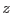

Light curve extraction is controlled by setting the parameter rateset, which is the name of the output file containing the ligh curve. Light curves are OGIP compliant histogram files of counts as a function of time. The name of the time column is set using the parameter timecolumn. Unlike spectrum extraction, light curve extraction supports real-valued columns. The range of times used is determined using the same algorithm as for the energy column in spectral extraction. The parameters used to control this are timemin and timemax. The bin size is set with the parameter timebinsize. All range and binning parameters are in the units of the column from which the data is being extracted.
The OGIP standard allows for several variations on how a light curve can be stored in a FITS table. In the first variation, only a COUNTS column is required in the table. Timing information is stored in the keywords TSTART, TSTOP and TIMEDEL. Each row in the table represent a sequential time bin, with the first bin starting at TSTART and a bin size of TIMEDEL. This is the type of light curve which evselect produces by default.
In a second variation, the table also contains a TIME column, giving the time of each bin in the light curve. Production of this type of light curve is enabled in evselect by setting to true the parameter maketimecolumn.
In either of the variations above, it is possible to replace the COUNTS column with a RATE column. In addition, an ERROR column, giving the error on the rates, is also supplied. Use of the RATE column is activated by setting the makeratecolumn parameter to true. It is false by default.
The OGIP standard also specifes the keywords CHANMIN, CHANMAX and CHANTYPE, which describe the energy range of the events used to extract the light curve. These keywords are set in evselect by querying information from the input table column. As with images, rather than just accumulating counts in each bin of a light curve, one can sum up the values of a another column in the input table, by specifying the name of the column in the parameter zcolumn. In the case of light curves one can also specify the error on the value of the  column. A column in the input table containing this information should be specified using the parameter zerrorcolumn. If zerrorcolumn is not set, then the values in zcolumn are used as the error values.
Note that no exposure correction of time bins is done in evselect. Thus, for example, the possibility that a time bin might partially overlap with a GTI is not corrected for. Exposure correction of light curves is handle by the task epiclccorr.